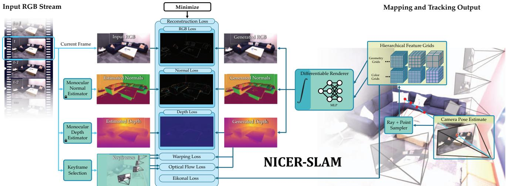

阶段 C · 视觉主干 / Lesson 0071
神经隐式建图（2024）：两种组合方式
把「离线 NeRF」搬进在线 SLAM，有两条拼法 🔌
🎯 主题：传统前端 + 神经隐式建图
👥 作者：NICER-SLAM（Zhu 等）/ DN-SLAM（Li 等）
📅 2024 · NICER-SLAM: Neural Implicit Scene Encoding for RGB SLAM （CVPR，推断）；DN-SLAM: A Visual SLAM With ORB Features and NeRF Mapping in Dynamic Environments （IEEE 期刊，推断）
本节目标 读完你应该能说清：神经隐式表示是怎么被「搬进」在线 SLAM 的；NICER-SLAM 与 DN-SLAM 在「谁算位姿、谁算地图」上的根本差别；以及为什么它们都还慢、下一步由 3D 高斯接着走。
和前面课程怎么接 第二季 0036–0039 讲过 NeRF / Instant NGP / Plenoxels——它们是「离线的场景表示」。第一季 0010 点名过 iMAP / NICE-SLAM，并断言「隐式地图在大尺度户外的有效性尚未被证明」。第一季 0015 的 3D 高斯泼溅是阶段 F 的引子。本节就是把这些线接成「在线神经 SLAM」。
1. 先把背景说清楚：离线 NeRF 怎么变成在线 SLAM
在第二季 0036–0039 里我们学过 NeRF、Instant NGP、Plenoxels。它们干的是同一件事：用神经网络（或一张大特征网格）来表示一个三维场景，给定相机位姿就能「渲染」出那张视角的照片。但当时它们是离线 的——你得先拍好一堆照片、算好相机位姿，再慢慢训练网络。它回答的是「这个房间长什么样」。
而 SLAM 要的是在线 ：一边走、一边实时估位姿、一边建图。第一季 0010 那节课就泼过冷水——它把建图方法分成点云、语义、隐式三类，明确点名 iMAP / NICE-SLAM 这类「隐式地图」方法，并说「隐式地图在大尺度户外的有效性尚未被证明 」。这句话是 2021 年说的，当时神经隐式还在房间级、还得靠 RGB-D 深度输入。
那到了 2024 年，有人问：能不能把那个「离线的神经场景表示」直接用在在线的 SLAM 里？也就是位姿也别预先算好，让网络一边渲染、一边自己把位姿和场景一起学出来？ 这就是本节两篇论文的共同出发点，也是通往阶段 F（神经隐式与 3D 高斯 SLAM）的桥。下面这张自绘图先给出「神经隐式稠密 SLAM」的整体闭环，请记住它——这是理解后面两篇的钥匙。
神经隐式稠密 SLAM 的整体闭环
渲染
颜色 / 深度 / 法向
神经隐式场景表示
层级 SDF 网格
相机位姿 T
每一帧的相机姿态
与真实图像比较
RGB + 单目线索 → 残差
提供场景
提供位姿
反传更新场景
反传更新位姿
蓝＝前向（渲染→比较）；橙＝反传（同时更新场景与位姿），这就是与「只优化场景」的离线 NeRF 的关键差别
这张图在画什么： 神经隐式稠密 SLAM 是一个「渲染—比较—反传」的闭环：场景表示（黄色）和相机位姿（绿色）一起作为渲染的输入，渲染出的图与真实图像比较得到残差，残差再沿两条橙色箭头同时反传去更新「场景」和「位姿」。怎么看这张图： ① 蓝色三条是「前向」，把场景和位姿变成一张渲染图；② 红色框是「比较」，残差就是渲染图和真图的差别；③ 两条橙色箭头是「反传」，它同时改场景权重和相机位姿——这正是它和只优化场景的离线 NeRF 的本质不同。要记住的一句话： 把「位姿」也放进反传箭头里，离线表示就变成在线 SLAM 了。
2. NICER-SLAM 是什么：纯 RGB 的端到端联合优化
NICER-SLAM（NICER-SLAM: Neural Implicit Scene Encoding for RGB SLAM ）的卖点很直接：只吃一段 RGB 视频，端到端联合优化「相机位姿」和「层级神经隐式 SDF（符号距离函数）场景」 ，顺带还能做新视角合成。它是 iMAP / NICE-SLAM 这条线在「纯 RGB、无深度输入」方向上的推进。
这里先解释两个词：SDF（有向距离场） 说的是「空间里任意一点到最近表面的距离」，表面内侧为负、外侧为正；层级（hierarchical） 是说它用粗到细的多层表示。为什么要端到端联合？因为传统 SLAM 往往「先估位姿、再拿位姿去建图」，而 NICER 把位姿也当成可学习的量，和场景一起被误差反传——呼应上面那张闭环图。
它相较前作（iMAP / NICE-SLAM / DIM-SLAM / Point-SLAM）的增量在于：前面那些要么只用单 MLP 只能做房间级（iMAP），要么得吃 RGB-D 深度（NICE-SLAM 等），要么同用 RGB 但只靠颜色+翘曲损失、要逐数据集调参还容易出漂浮伪影（DIM-SLAM）。NICER 靠「纯 RGB + 单目几何线索（Omnidata 给出的深度/法向）+ 光流 + 翘曲 + 局部自适应 β」做到免调参、三维重建更干净。

原图注（Fig. 2）： System Overview. 方法只以 RGB 流为输入，同时输出相机位姿与学到的层级场景表示（几何与颜色）。为实现端到端的联合建图与跟踪，它渲染预测的颜色、深度、法向，并相对于输入 RGB 与单目线索做优化；同时用几何一致性进一步约束。怎么看这张图： ① 图左侧是「渲染」分支，把当前场景表示和位姿变成颜色/深度/法向；② 中间把渲染结果和真实 RGB、单目深度/法向、光流等线索比对；③ 右侧是「联合优化」——位姿和场景表示一起被更新。这正是第 1 节那张闭环图的具体实现版，盯着那条把误差同时送回位姿与场景的箭头看。
3. 表示与损失：层级特征网格 + 多分辨率 SDF
NICER 的场景表示不是 hash 网格、也不是占用场，而是层级特征网格 + 多分辨率 SDF 。具体分两层：
粗层： 一个 $32^3$ 的体素网格，每个体素存 32 维特征，接一个小 MLP 得到「基础 SDF」。细层： L = 8 级的多分辨率特征网格，分辨率从 $R_{\min}=32$ 到 $R_{\max}=128$，每级 4 维特征加 MLP，得到「残差 SDF」。最终 SDF 是两者相加：
颜色则另用 L = 16 级、最高分辨率 $R_{\max}=2048$ 的特征网格表示。渲染时用 VolSDF 式的方法把 SDF 转成密度 $\sigma_\beta(s)$，再体渲染出颜色、深度、法向。
它的损失（loss）项是多任务加权求和，原文给的是：RGB 重建 + 0.5 翘曲（warping）+ 0.001 光流 + 0.1 单目深度 + 0.05 单目法向 + 0.1 Eikonal（保证 SDF 梯度单位长这一几何约束）。此外还引入局部自适应 SDF→密度 ：按某个体素被采样到的次数 $T_p$ 来决定密度转换的尖锐程度 β（采样越多越确定、β 越小、表面越锐利），用来适配大尺度序列。一句话——它用一堆「单目线索」当弱监督，弥补「没有真实深度」的缺口。
4. 怎么同时估位姿与场景：端到端联合的闭环
NICER 把「建图」和「跟踪」做成可以并行、又共享同一套反传的两件事：
Mapping（建图） 分 3 个阶段优化场景表示：先在 25% 迭代后加入细层，再在 75% 加入含 K 帧外参的局部 BA（光束平差）。Camera Tracking（跟踪） 与之并行：固定场景不动，只拿 RGB 渲染损失去优化「当前帧位姿」100 次。
合起来就是第 1 节那张闭环：渲染 → 与输入 RGB 及单目深度/法向/光流比较 → 反传 → 同时更新「场景网格权重」和「相机位姿」→ 回到渲染。注意原文强调：没有显式地图点，地图就是 MLP/网格的权重 。这是它和 iMAP / NICE-SLAM 一脉相承的地方。
实验数字上：在 Replica 数据集上，它是 RGB 方法里最好的，且和吃深度的 NICE-SLAM / Vox-Fusion 持平；跟踪 ATE 平均约 1.88 cm，和 NICE-SLAM 的 1.95 cm 相当，但 NICER 没有深度输入 。在 7-Scenes（低分辨率+运动模糊）上几何更锐利；在自采的室外 SCO 集（Azure Kinect，6 个场景 800–2700 帧）上，因为室外深度不可靠所以只用 RGB，重建优于基线、逼近 NeRF-SLAM——这正是对第一季 0010「隐式地图大尺度户外未证」的一次正面回应。
互动判断 NICER-SLAM 的位姿是怎么得到的？
位姿随场景一起反传
由 ORB 特征法单独给
局限（原文承认）： 速度上它明确非实时 ——原文 Limitations 说目前还没为实时优化，并点名「上 Instant-NGP 那样的 CUDA 方案、做 on-the-fly 空区域跳过」是顺手就能做的加速策略。另外它没有回环 。也就是说，它证明了「纯 RGB 神经隐式能在室内外稠密重建」，但代价是慢。
5. DN-SLAM：ORB 跟踪 + NeRF 建图怎么分工
DN-SLAM（DN-SLAM: A Visual SLAM With ORB Features and NeRF Mapping in Dynamic Environments ）走的是另一条路：它不把位姿塞进神经网络，而是用现成的 ORB-SLAM3 当「传统特征前端」去算位姿，再让一个 instant-ngp 框架的 NeRF 只负责「稠密建图」。
分工非常清楚：
ORB-SLAM3（前端） 负责跟踪/位姿：提取 ORB 特征、匹配、局部 BA，给出初始相机位姿。NeRF（后端） 负责稠密建图：只对静态区域 的光线做采样和体渲染；动态物体所在的光线被挡在采样范围外，物体离开后背景会在后续渲染里被补全。
也就是说，DN-SLAM 是「传统前端定位 + 神经隐式建图」的拼装 ：位姿由 ORB 给，地图由 NeRF 画，两者不联合反传 。这正好和 NICER 形成对照——NICER 是「一个系统里联合反传」，DN-SLAM 是「前端后端分离」。NeRF 的渲染公式仍是标准的：
其中 $T_i$ 是透过率、$\sigma_i$ 是密度、$\delta_i$ 是采样步长、$\mathbf{c}_i$ 是颜色。静态采样像素用 L1 光度损失 $L_c$，位姿侧用重投影误差 $L_r$ 加局部 BA 优化。
6. DN-SLAM 怎么处理动态物体：语义 + 光流 + SAM 两级
DN-SLAM 比 NICER 多了一块专攻「动态」的能力（NICER 主要面向静态室内，不专门处理动态）。它用两级分割得到动态 mask：
粗分割 $S_c$： 用语义分割网络（ResNet 编码 + PPM 解码，在 ADE20K 上训练）找出「潜在会动的东西」——人、狗、椅子等。光流提供运动点： 光流告诉我们哪些像素在动。细分割 $S_f$： 以光流动态点为 prompt 喂给 SAM（Segment Anything），做精细分割。
最终只在静态区域 提取 ORB 特征；动态 mask 边缘 1 像素内的特征也一并废掉；当动态区域超过 50% 时，会加大特征密度。这样 NeRF 采样的就只 static 光线，渲染出的就是「静态部分的重建」。
原图注（Fig. 2）： Specific process for the two splits. 先用语义分割识别潜在运动，再用光流配合动态区域确定动态 mask；SAM 基于光流和动态区域做分割，生成最终动态 mask。怎么看这张图： ① 左上是「粗分割」——语义网络圈出可能动的目标；② 中间「光流」提供像素级运动证据；③ 右下「SAM 细分割」把动态区域抠准。盯着这条「语义→光流→SAM」的链路，它解决的就是「到底哪些像素该被排除在建图之外」这个问题。
原图注（Fig. 3）： Dynamic mask results on a dynamic scene. (a) 原图；(b) 初分 mask；(c) 细分后结果；(d) 只在静态区域提取特征的效果。怎么看这张图： ① (a) 是普通照片，(b) 是语义初分的粗略动态区；② (c) 经 SAM 细分后边界更准；③ (d) 显示最终只在「静态区」留下的特征点（绿/亮点），走动的人身上几乎没有特征——这正是 NeRF 只重建静态部分的依据。
实验上，在 TUM fr3/walking 序列，DN-SLAM 的 ATE 为 0.015 / 0.032 / 0.008 / 0.026（四个子序列，单位米），而 ORB-SLAM3 高达 0.454 / 0.761 / 0.027 / 0.362，比 ORB-SLAM3 最高提升 96.7% ；在 Bonn 多序列同样领先（crowd 序列 0.025 vs ORB-SLAM3 0.980）。平台是 Intel i9 + RTX4090 + 32G。但原文也承认：它仍然慢，尤其是 SAM 细分割拖累，难实时 ，未来主攻实时性。
7. 两种组合方式对比：联合优化 vs 前端分离
两篇都属「传统前端 + 神经隐式建图」家族，差别只在分工方式 。下面这张自绘图把「位姿从哪来」用两种颜色标出来，是本节的主干。
NICER-SLAM：联合优化
DN-SLAM：前端分离
端到端网络
位姿 + 场景一起反传
输入：仅 RGB 视频
反传同时更新
位姿 T 与场景 SDF
位姿由网络反传得到
ORB-SLAM3 前端
传统特征法 · 负责相机位姿
instant-ngp NeRF
只建静态稠密地图
位姿由 ORB 给出（绿）
动态 mask 闸门：动态像素不进 NeRF
关键差别：NICER 一个系统里联合反传；DN 前端（ORB）与后端（NeRF）分离，不联合反传
这张图在画什么： 左联 NICER-SLAM（紫）：一个端到端网络里，位姿和场景一起被反传；右联 DN-SLAM（绿）：ORB-SLAM3 前端给位姿（绿箭头），NeRF 后端只建静态图，中间还有一道动态 mask 闸门。怎么看这张图： ① 左联的位姿从网络内部「反传」出来（紫）；② 右联的位姿从 ORB 前端「给」到 NeRF（绿），两者不共享反传；③ 红框是 DN 特有——动态像素被挡在 NeRF 采样之外。要记住的一句话： 「谁算位姿」是两条路线的分水岭：NICER 让网络反传位姿，DN 把位姿交给成熟的特征法。
把「前端做什么 / 后端做什么 / 谁保证几何一致 / 动态物体怎么处理」逐项摆开，差异一目了然：
NICER-SLAM
前端： 很轻，就是端到端渲染+比较，没有独立特征跟踪。后端： 同一套层级 SDF 网络既当地图又参与位姿。几何一致： 靠神经网络隐式表示 + 单目线索 + Eikonal 约束一起保证。动态物体： 未专门处理（偏静态室内场景）。
DN-SLAM
前端： ORB-SLAM3 特征法，老老实实给位姿。后端： instant-ngp NeRF，只建静态稠密图。几何一致： 位姿和地图分离，靠 ORB 的重投影/局部 BA 保证位姿，NeRF 只负责图。动态物体： 语义+光流+SAM 两级剔除，NeRF 只渲染静态。
互动判断 下面哪句话对 NICER-SLAM 与 DN-SLAM 的对比是正确的？
联合反传对前端分离
用 NeRF 对不用 NeRF
8. 收尾：桥接到阶段 F（3D 高斯泼溅）
两篇都还受同一个约束：慢、场景偏小 。NICER 明确说非实时、没回环；DN-SLAM 被 SAM 细分割拖垮、难实时。它们证明了「神经隐式能用来在线建图」，但没解决速度。
这时候就要接上第一季 0015 学过的 3D 高斯泼溅（3D Gaussian Splatting） 。它用的也是「可微渲染」，但把 NeRF 的「沿光线体渲染、跑神经网络」换成了「一堆 3D 高斯 + 光栅化」——光栅化比逐光线采样快得多，于是把速度提了上来。阶段 F 就是接着这条线走：神经隐式 / 3D 高斯 SLAM，目标是既稠密、又能实时。 你可以把本季这节当成「为什么需要阶段 F」的理由：NICER / DN 把范式跑通了，速度这关留给 3D 高斯去攻。
离线 NeRF（0036–0039） 照片+位姿都先备好，慢慢训练场景表示。回答「场景长啥样」。
NICER / DN（本节） 把神经表示搬进在线 SLAM：位姿和地图一起（或分开）学。范式跑通，但慢。
3D 高斯（阶段 F） 可微渲染 + 光栅化提速，目标实时稠密。本节的下一站。
课后练习
用一句话说清「离线 NeRF」和「在线神经 SLAM」的根本差别在哪里？
展开查看答案 差别在「位姿是不是也被反传」。离线 NeRF 的位姿是预先算好的、固定不变；在线神经 SLAM（如 NICER）把位姿也当成可学习量，和场景一起被渲染误差反传，从而能一边走一边估。
NICER-SLAM 的场景表示为何要分「粗层 + 细层」两层 SDF？$\hat{s}=s_{\text{coarse}}+\Delta s$ 在表达什么？
展开查看答案 粗层用 $32^3$ 体素网格给出场景的大致形状（基础 SDF），细层用 8 级多分辨率特征网格补细节（残差 SDF）。两者相加 $\hat{s}=s_{\text{coarse}}+\Delta s$ 表示「先有粗糙轮廓、再在其上叠加细节」，既省算力又能刻画精细几何，比单个 MLP（如 iMAP）能覆盖更大场景。
NICER 没有真实深度输入，它靠哪些「单目线索」当弱监督来训练 SDF？
展开查看答案 靠 Omnidata 提供的单目深度与法向、光流、以及翘曲（warping）一致性，加上 RGB 重建与 Eikonal 约束。它们都不是「真值深度」，而是单张图能估出来的几何线索，用多任务损失一起约束网络。
DN-SLAM 的「两级动态分割」具体指哪两级？为什么动态物体离开后背景能被补全？
展开查看答案 两级是：粗分割（语义分割找潜在运动物）+ 细分割（以光流动态点为 prompt 喂 SAM 精分割）。动态物体离开后，原来被它挡住的背景区域重新变成「静态光线」被 NeRF 采样，于是隐式场里那块「没被照到」的洞就被补全——动态物体在隐式场里只是暂时没被采样，不是被写死。
为什么 NICER 和 DN-SLAM 都还「不够快」？阶段 F 打算用什么思路解决？
展开查看答案 NICER 的非实时源于层级网格+MLP 的密集查询与无 CUDA 加速；DN-SLAM 被 SAM 细分割和逐光线 NeRF 渲染拖慢。阶段 F 接第一季 0015 的 3D 高斯泼溅：用可微渲染 + 光栅化（一堆 3D 高斯）替代逐光线体渲染，把速度提上来，目标实时稠密建图。